History¶
I padri¶
| 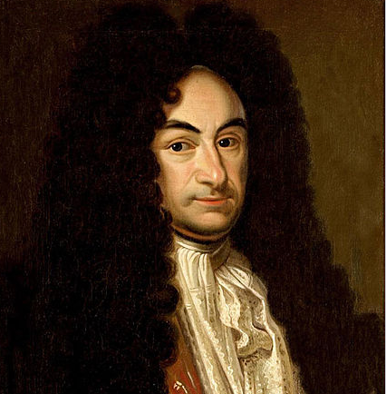
Gottfried Wilhelm von Leibniz 1646 - 1716 |
Filosofo, matematico, scienziato, teologo, linguista, glottoteta, diplomatico, giurista, storico e magistrato tedesco. Considerato il precursore dell’informatica, della neuroinformatica e del calcolo automatico. Una delle poche figure di “genio universale” |
| 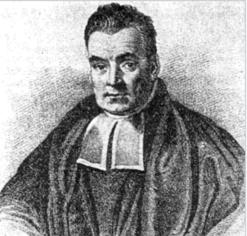
Thomas Bayes 1702 - 1761 |
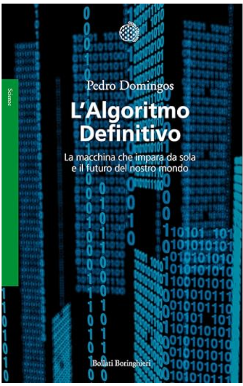 ISBN-13 978-8833927060 |
| 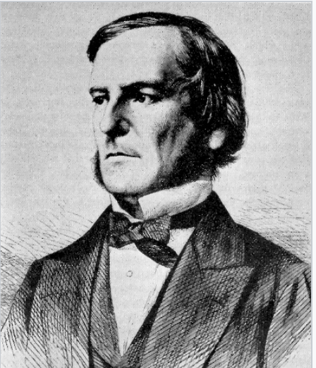
George Boole 1815 - 1864 |
Matematico e logico inglese, considerato il fondatore della logica matematica. |

Ada Lovelace 1815 - 1852 |
Nobildonna e matematica britannica, nota soprattutto per il suo contributo alla macchina analitica ideata da Charles Babbage. Considerata la prima programmatrice della storia, ha scritto il primo algoritmo destinato ad essere eseguito da una macchina. |
| 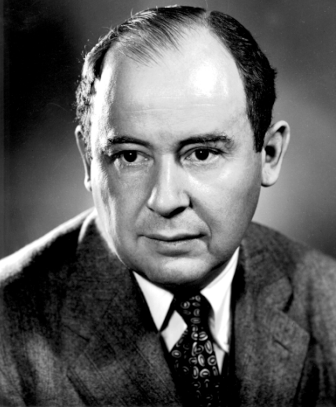
John von Neumann 1903 - 1957 |
Matematico, fisico, informatico e ingegnere ungherese naturalizzato statunitense. Ha apportato contributi significativi, spesso assolutamente innovativi, in molti campi, dalla matematica alla statistica, dalla meccanica quantistica alla cibernetica, dall’economia all’evoluzione biologica, dalla teoria dei giochi, all’intelligenza artificiale. ISBN-13 978-8845938320 |
| 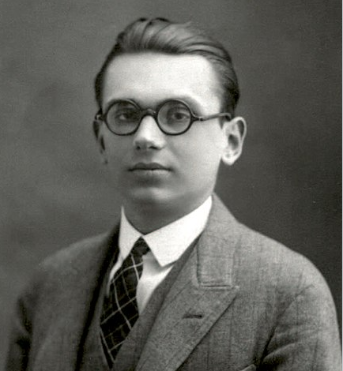
Kurt Friedrich Gödel 1906 - 1978 |
Ritenuto uno dei più grandi logici di tutti i tempi insieme ad Aristotele, Leibniz e Frege. I suoi teoremi di incompletezza precisano proprietà che i sistemi formali non possono avere. |
| 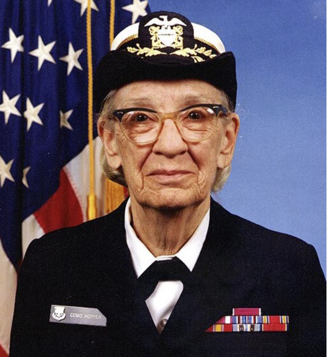
Grace Murray Hopper 1906 - 1992 |
Informatica e ammiraglio della Marina statunitense, ha sviluppato il primo compilatore per linguaggi di programmazione di alto livello e ha contribuito alla creazione del linguaggio COBOL. |
| 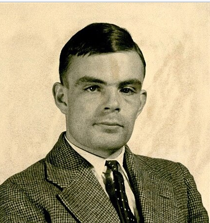
Alan Turing 1912 - 1954 |
Matematico, considerato uno dei padri dell’informatica |
|
Claude Shannon 1916 - 2001 |
Ingegnere e matematico, spesso definito “il padre della teoria dell’informazione” |
| 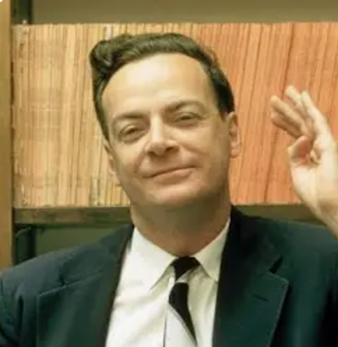
Richard Phillips Feynman 1918 - 1988 |
Fisico . Premio Nobel per la fisica nel 1965 (con Julian Schwinger e Shin’ichirō Tomonaga) per aver contribuito allo sviluppo dell’elettrodinamica quantistica. Quello che non posso creare, non lo saprò mai capire |
| 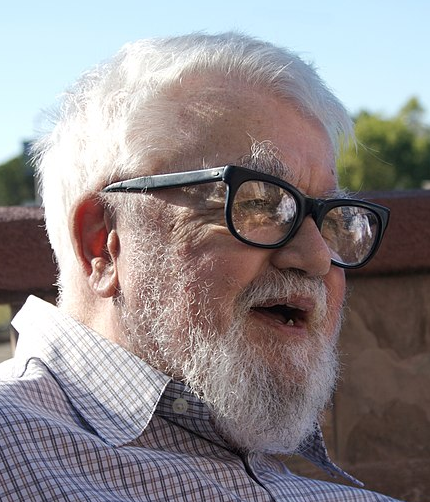
John McCarthy 1927 - 1971 |
Informatico statunitense che ha vinto il Premio Turing nel 1971 per i suoi contributi nel campo dell’intelligenza artificiale. Inventò il linguaggio di programmazione Lisp. |
| 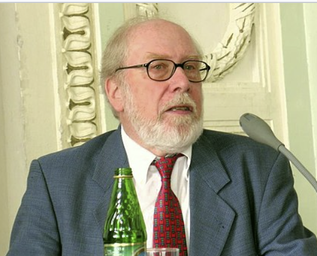
Niklaus Wirth 1934 - 2024 |
informatico e inventore svizzero, pioniere dell’informatica. Fu l’inventore dei linguaggi di programmazione Pascal, Modula-2 e Oberon. |
|
Steve Jobs 1955 - 2011 |
Fondatore di Apple Inc e di NeXT computer. Il vostro tempo è limitato, quindi non sprecatelo vivendo la vita di qualcun altro. Siate affamati, siate folli, perché solo coloro che sono abbastanza folli da pensare di poter cambiare il mondo lo cambiano davvero |
{kind=link}
{kind=link}
{kind=link}
{kind=link}
{kind=link}
{kind=link}
{kind=link}
{kind=link}
{kind=link}
{kind=link}
{kind=link}
{kind=link}
{kind=link}
{kind=link}
Attori di oggi¶
| 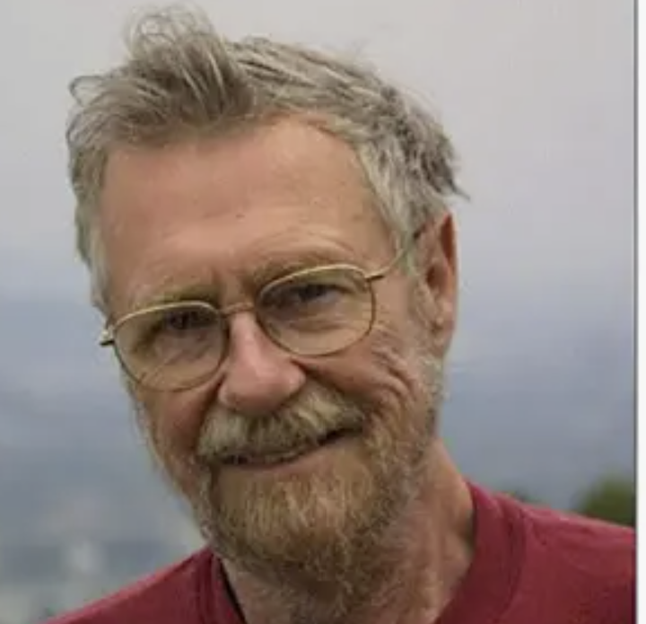
Edsger W. Dijkstra 1930 - |
Informatico olandese, ha dato importanti contributi alla teoria dei linguaggi di programmazione, alla progettazione di algoritmi e alla verifica formale del software. Nel 1972 ha ricevuto il Premio Turing. |
| 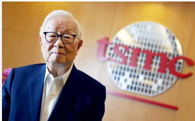
Morris Chung-Mou Chang 1931 - |
Fondatore TMSC di Taiwan ISBN-13 978-8811011699 |
| 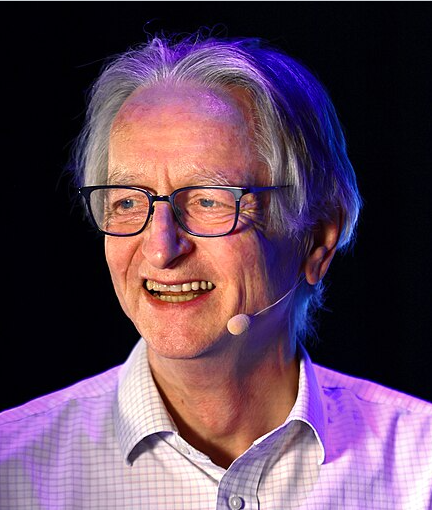
Geoffrey Hinton 1947 - |
Informatico studioso di reti neurali. Permio Turing 2018 (con Yoshua Bengio e Yann LeCun) per i suoi contributi allo sviluppo dell’apprendimento profondo premio Nobel per la Fisica nel 2024 (con John Hopfield) per gli studi sulla AI. |
| 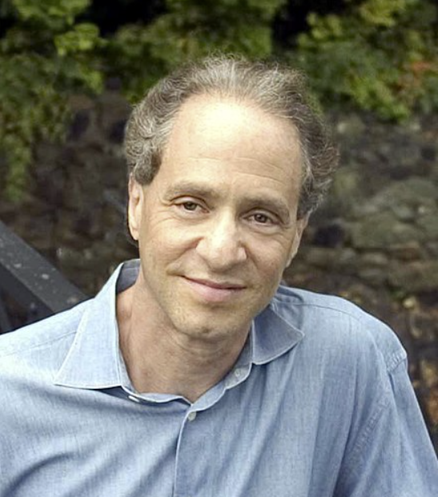
Raymond Kurzweil 1948 - |
Inventore, informatico e saggista statunitense. È stato fra i primi a creare sistemi di intelligenza artificiale in grado di leggere testi, sintetizzare suoni, comprendere il parlato È autore di numerosi libri sulla salute, l’intelligenza artificiale, il transumanesimo e la singolarità tecnologica. Ha introdotto il concetto di “singolarità tecnologica” nel 2005 e il concetto della “legge dei ritorni accelerati”. È ricercatore e AI Visionary presso Google. The Singularity Is Near (“La Singolarità è vicina”) fu pubblicato nel 2005. ISBN-13 978-8850337378 |
| 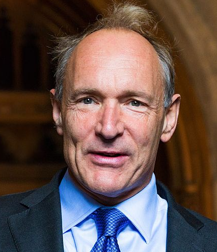
Barners-Lee 1955 - |
Informatico britannico, inventore del World Wide Web |
| 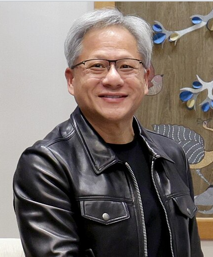
Jen-Hsun (Jensen) Huang 1963 - |
Co-fondatore NVIDIA |
|
Linus Torvalds 1969 - |
Informatico e blogger finlandese, conosciuto soprattutto per essere stato l’autore e programmatore della prima versione del kernel Linux |
| 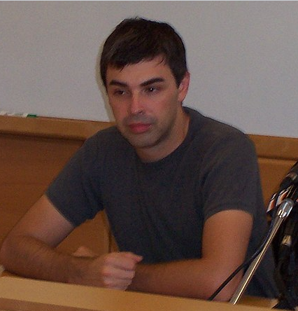
Larry Page 1973 - |
Co-fondatore di Google (con Sergey Brin) dopo il dottorato con Terry Winograd e la collaborazione con Scott Hassan, il principale programmatore del motore di ricerca originale (noto come BackRub) un progetto di ricerca avviato nel 1996 |
| 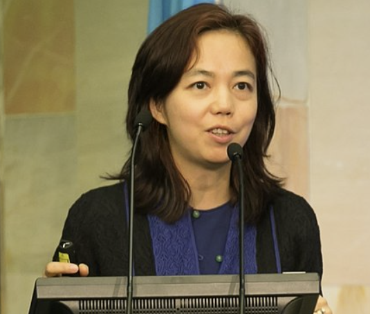
Fei-Fei Li 1976 - |
Informatica cinese-americana,specializzata in intelligenza artificiale e visione artificiale, ha svolto un ruolo fondamentale nello sviluppo di ImageNet e ha contribuito a democratizzare l’accesso all’IA. |
|
Demis Hassabis 1976 - |
Amministratore delegato di DeepMind, premio Nobel per la Chiimica nel 2024 (con John M. Jumper) per i sistemi di predizione delle proteine |
{kind=link}
{kind=link}
{kind=link}
{kind=link}
{kind=link}
{kind=link}
{kind=link}
{kind=link}
{kind=link}
{kind=link}
{kind=link}
{kind=link}
Companies¶
| 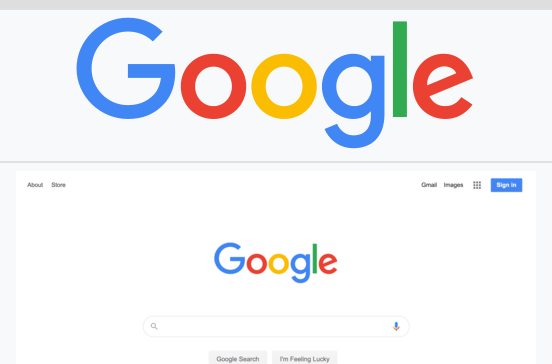
Google Fondata da Larry Page e Sergey Brin il 4 settembre 1998 |

Amazon Fondata con il nome di Cadabra.com da Jeff Bezos il 5 luglio 1994 e lanciata nel 1995. |
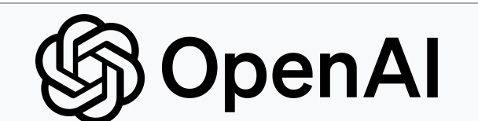
OpenAI Fondata nel dicembre 2015 come organizzazione non-profit, poi “capped” for-profit dal 2019 e dopo ancora patner di Microsoft a altri |
{kind=link}
{kind=link}
Sam Altman Greg Brockman Jakub Pachocki Ilya Sutskever
On May 22, 2023, Sam Altman, Greg Brockman and Ilya Sutskever posted recommendations for the governance of https://en.wikipedia.org/wiki/Superintelligence.
https://en.wikipedia.org/wiki/Superintelligence_(film)
Modello |
Parametri |
Azienda |
Data di rilascio |
|---|---|---|---|
GPT-3 |
175 miliardi |
OpenAI |
Maggio 2020 |
LaMDA |
137 miliardi |
Maggio 2021 |
|
PaLM |
540 miliardi |
Aprile 2022 |
|
GPT-NeoX-20B |
20 miliardi |
EleutherAI |
Febbraio 2022 |
Megatron-Turing NLG |
530 miliardi |
NVIDIA e Microsoft |
Maggio 2022 |
Chinchilla |
70 miliardi |
DeepMind |
Marzo 2022 |
LLaMA |
7 miliardi - 65 miliardi |
Meta |
Febbraio 2023 |
GPT-4 |
Non divulgato |
OpenAI |
Marzo 2023 |
DALL-E |
12 miliardi |
OpenAI |
Gennaio 2021 |
PaLM-E |
Non divulgato |
Marzo 2023 |
|
Gemini |
Non divulgato |
Maggio 2023 (annuncio) |
ChatGpt
Sistema |
Azienda |
Parametri |
Data di rilascio |
|---|---|---|---|
GPT-1 |
OpenAI |
117M |
2018 |
BERT (Large) |
340M |
Ottobre 2018 |
|
GPT-2 |
OpenAI |
1.5B |
Febbraio 2019 |
T5 (11B) |
11B |
2020 |
|
GPT-3 |
OpenAI |
175B |
Giugno 2020 |
Megatron-Turing NLG |
Microsoft |
530B |
Ottobre 2021 |
PaLM |
540B |
Aprile 2022 |
|
OPT-175B |
Meta |
175B |
Maggio 2022 |
LLaMA (65B) |
Meta |
65B |
Febbraio 2023 |
GPT-4 |
OpenAI |
ND |
Marzo 2023 |